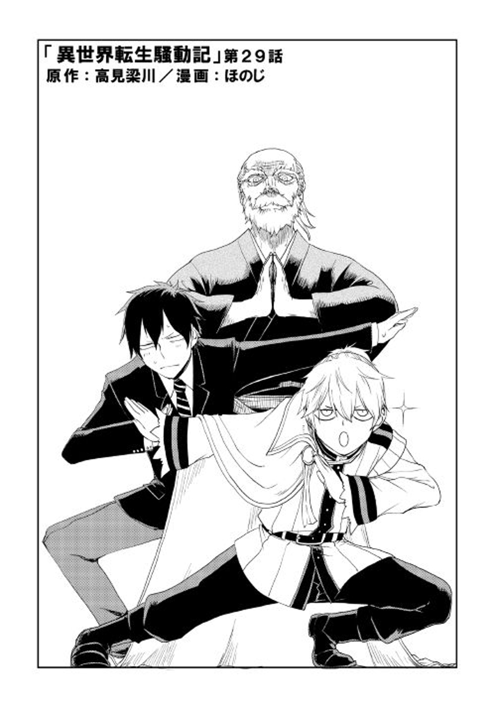

Resumen
Balud Cornelius es el hijo de un noble del reino de Mauricia, dentro de él habitan las almas de el tacaño combatiente el comandante Oka Sadatoshi y Oka Masaharu, estudiante otaku de bachillerato. Con estas tres almas en un solo cuerpo, puede exhibir habilidades extraordinarias cuando se trata de combatir o administrar el dominio.
Autor: Honoji (ほのじ)
Ilustrador: Takami Ryousen(梁川 高見)
Comentarios
Este manga disputo mucho su puesto con otros isekai que fueron quedando fuera de mi lista, ya que ciertamente sigue un esteriotipo clasico, conocimiento de otro mundo para poder gobernar en la economia, entonces ¿Porque se quedo?, bueno principalmente por 2 razones.
El hecho de que sea tipica no la hace mala necesarimente, en especial, ya que esta logro destacar como la mejor dentro de esas tipicas.
Ademas tiene un topico que destaca y es el hecho de las 3 almas dentro del mismo cuerpo, ya se habian tocado topicos con una nueva alma dentro de un cuerpo de otra mundo, pero no con 3 almas en el mismo cuerpo.
Balud Cornelius

Nuestro protagonista un dia despierta de una fiebre alta y se da cuenta que en su cuerpo habitan mas entidades dentro de el, esto en vez de preocuparlo y ya que no le quedaba mas que resignarse, usa esto como una oportunidad, usando los conocimientos del estudiante dentro de su cuerpo, para desarrollarse en la econimia.
Baldur destaca por un alto conocimiento para su edad y una muy buena condicion fisica y conocimiento para el combate, esto no solo debido a 1 de sus almas, si no al estricto entrenamiento propisiado por su madre.

Por ciertas razones, debe viajar a una escuela de caballerod mandado por su padre, ahi consigue relaciones con nuevos personajes los cuales seran sus compañeros.
A pesar de ser un manga relativamente conocido en su mundillo, no es lo suficientemente popular para tener anime, pero con su buena historia, se espera este llegue algun dia.
Si desean leer este manga lo puedes encontrar en algunos de los siguientes link: